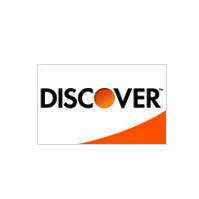
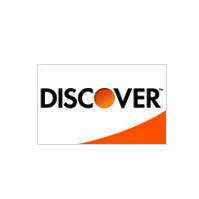

Corporate Partnerships

How WWF Works With Companies
Causing MarketWe engage with corporations to develop integrated consumer-facing campaigns that enable companies and their customers to show their support and to contribute actively to conservation. These collaborations are specifically designed to increase public awareness about Amazon Rainforest Society and to generate revenue for our global conservation efforts. |
Philanthropic GivingCompanies may also provide funding to help support specific Amazon Rainforest Socity conservations initiatives and the local communities they serve. Whether funding an initiative which is directly related to their core business or an issue that the company and its employees find meaningful, we work to ensure each philanthropic contribution supports lasting conservation solutions that will benefit species, people and the environment. |
Sustainable BusinessWe work with companies to assess their environmental impact and build a strategic plan to reduce that impact in a way that will advance both conservation and the companys business objectives. This approach is designed to create significant improvements in operational efficiency and sustainability across the company from headquarters to plant to supply chain. The result is increased efficiency, more secure supplies and a greatly reduced environmental impact. |
Opportunities For Collaboration
SpeciesSaving the amazon is at the core of our mission. Why? Healthy wildlife populations mean ecosystems thrive. By combating threats like poaching, habitat loss and overuse of natural resources, we create a better future for wildlife every day. We have helped bring back the Amur tiger and black rhinos from the edge of extinction. Join us in giving isolated and dwindling populations of other endangered species a second chance. |
MarineOceans contain the greatest diversity of life on Earth and supply fish and other seafood, which serve as a major source of protein for billions of people. Overexploitation of fish and other resources, destructive fishing, unregulated development, pollution and climate change are altering oceans in numerous ways. Join us in our efforts to protect the worlds oceans and the variety of species and communities that depend on them. |
ForestsForests are vital to life on Earth purifying the air we breathe, filtering the water we drink, preventing erosion, and acting as an important buffer against climate change. They also provide habitat for a vast array of plants and animals. Despite the key role forests play, we continue to lose forests at an alarming rate. Join us in conserving the worlds forests and the well-being of the species and communities that depend on the forest for their survival. |
ClimateFrom polar bears in the Arctic to marine turtles off the coast of Africa, our planets diversity of life is at risk from climate change. This unnatural shift is causing an alarming amount of harm to animals, habitats and livelihoods around the world. Join us in our efforts to halt deforestation, help nature and people adapt to a warmer world, and ensure the sustainability of your business. |
WaterFresh water is vital to life and yet it is a finite resource. Of all the water on Earth, just 3% is fresh water. Although critical to nature and healthy communities, fresh water is threatened by a myriad of forces. Join with Amazon Rainforest Society in our efforts to improve water quality, increase water efficiency and stewardship and protect iconic fresh water sources to ensure enough clean water exists to provide a healthy future for wildlife, people, and industry. |
Food and AgricultureHow and where we produce food is one of the most important conservation issues of the 21st century. The challenge of sustaining life on an increasingly crowded planet of more than 7 billion people grows more complicated every day. By the year 2050, our planet will be home to another 2 billion people. We need to freeze the footprint of food. Help us find solutions to produce enough food for all and still maintain a living planet. |
People and CommunitiesAround the world, local communities and indigenous peoples are key stewards of the natural places we work to conserve. They depend on forests, fisheries and wildlife for their ways of life. Over generations, many have developed knowledge and practices to sustainably use and protect natural resources. Yet local people face growing challenges to their ability to be good stewards. Join us in strengthening communities ability to conserve the natural resources they depend upon. |
| The challenges facing our planet are tremendous. Since 1970, biodiversity has decreased by nearly 30 percent. By 2030, we will need two planets to support the way we are living. As humanitys ecological footprint grows, natural resources are depleted, resulting in surging costs that cut into business profits and threaten supply chains. Bold action is required to solve this challenge at the scale and pace it requires. Working together, Amazon Rainforest Society and corporations can help protect the long-term viability of the planet and the global economy. While no business or conservation organization can accomplish this task alone, when we combine and leverage our individual strengths, we can forge extraordinary change. Together, we can accomplish great successes on behalf of the Earth. |
|
|
|
|
|


 
